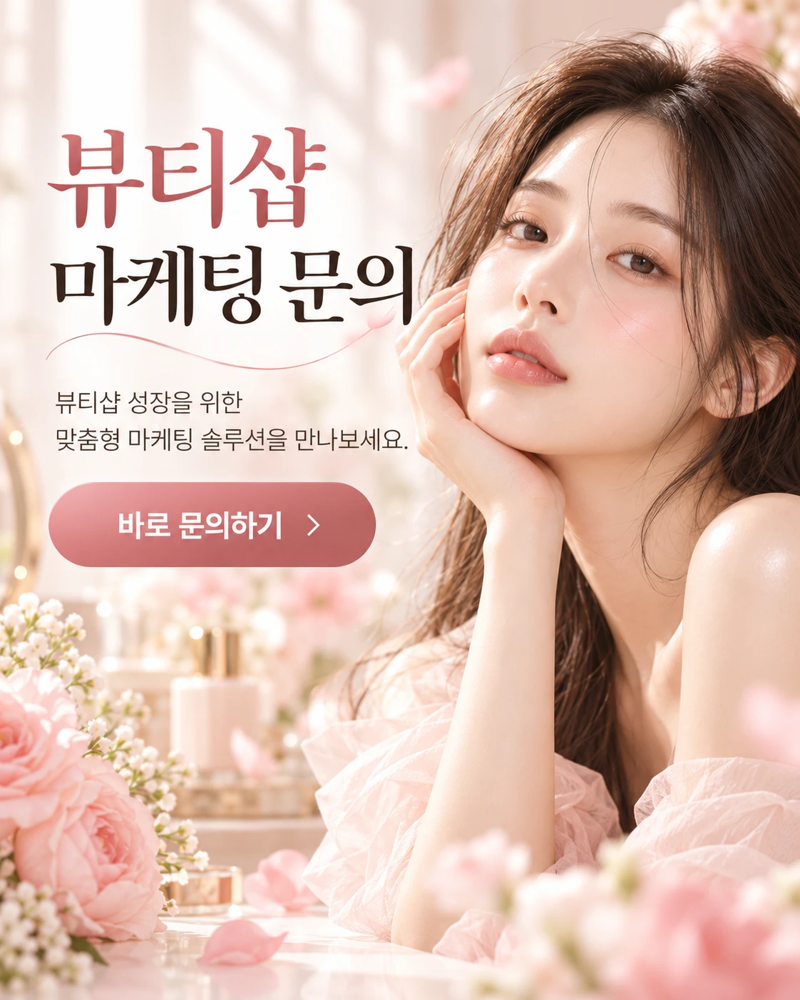

전국 TB왁싱 지점 안내
가까운 TB왁싱을
내 지역에서 찾으세요
브라질리언, 남자 브라질리언, 슈가링, 임산부 왁싱까지. 지역을 고르면 해당 지점의 관리 안내와 위치, 예약 방법을 바로 확인할 수 있습니다.

지점 찾기
지역을 선택하면 해당 지역의 TB왁싱 지점으로 이동합니다.
- 서울 왁싱 서울특별시
- 부산 왁싱 부산광역시
- 대구 왁싱 대구광역시
- 인천 왁싱 인천광역시
- 광주 왁싱 광주광역시
- 대전 왁싱 대전광역시
- 울산 왁싱 울산광역시
- 세종 왁싱 세종특별자치시
- 경기 왁싱 경기도
- 강원 왁싱 강원특별자치도
- 충북 왁싱 충청북도
- 충남 왁싱 충청남도
- 전북 왁싱 전북특별자치도
- 전남 왁싱 전라남도
- 경북 왁싱 경상북도
- 경남 왁싱 경상남도
- 제주 왁싱 제주특별자치도
일치하는 지역이 없습니다. 카톡 문의로 가까운 지점을 안내받으세요.
지점 찾기 페이지로 →왁싱 안내
모든 지점에서 같은 기준으로 진행하는 네 가지 관리입니다. 지역별 페이지에서 지점 안내를 함께 확인할 수 있습니다.
브라질리언 왁싱
위생 관리와 깔끔한 정리를 위해 가장 많이 찾는 관리입니다. 처음이라면 범위와 방식을 상담 후 정합니다.
자세히 보기 →남자 브라질리언 왁싱
남성 고객을 위한 브라질리언 관리입니다. 예약제로 운영해 다른 고객과 마주치는 일을 줄였습니다.
자세히 보기 →슈가링 왁싱
설탕을 기본으로 한 페이스트를 사용하는 방식입니다. 피부가 예민한 분들이 많이 문의합니다.
자세히 보기 →임산부 왁싱
출산을 앞둔 분들을 위한 관리입니다. 자세와 시간을 몸 상태에 맞춰 조정하며 진행합니다.
자세히 보기 →-
01
털 길이는 0.5~1cm 정도로
너무 짧으면 왁스가 잡히지 않습니다. 방문 2~3주 전부터 면도를 멈추는 것이 좋습니다.
-
02
당일 각질 제거는 피하기
스크럽이나 강한 각질 제거는 피부를 예민하게 만듭니다. 하루 이틀 전에 가볍게 해주세요.
-
03
피부 상태는 미리 알려주세요
복용 중인 약, 피부 질환, 임신 여부는 상담 때 말씀해 주시면 관리 방식을 조정합니다.
-
04
편한 옷차림이면 충분합니다
관리 후에는 꽉 끼지 않는 하의가 편합니다. 필요한 용품은 지점에 준비되어 있습니다.
관리 과정
예약부터 관리 후까지, 모든 지점이 같은 순서로 진행합니다.
-
1단계
예약
카톡 또는 전화로 원하는 지점과 시간을 정합니다.
-
2단계
상담
피부 상태와 원하는 범위를 확인하고 방식을 정합니다.
-
3단계
관리
독립된 공간에서 부위별로 나누어 진행합니다.
-
4단계
진정
관리한 부위를 정리하고 피부를 진정시킵니다.
-
5단계
사후 관리 안내
보습, 샤워, 다음 방문 시기를 알려드립니다.
공간 소개
지점마다 공간은 다르지만, 1인 관리실과 차분한 조도라는 기준은 같습니다. 지점별 공간은 각 지역 페이지에서 볼 수 있습니다.


자주 묻는 질문
많이 아픈가요?
처음에는 따끔함이 있지만 부위를 나누어 빠르게 진행해 부담을 줄입니다. 관리를 반복할수록 털이 가늘어져 대부분 덜 아프다고 느낍니다.
얼마나 자주 받아야 하나요?
보통 3~5주 간격을 권합니다. 털이 자라는 속도는 사람마다 달라 상담 때 주기를 함께 정합니다.
생리 기간에도 받을 수 있나요?
이 기간에는 피부가 예민해질 수 있어 일정 조정을 권합니다. 예약 변경은 카톡으로 편하게 말씀해 주세요.
관리 후 바로 샤워해도 되나요?
가벼운 샤워는 괜찮습니다. 당일 사우나, 수영, 뜨거운 탕은 피하고 보습에 신경 써 주세요.
남성 고객도 예약할 수 있나요?
네. 남자 브라질리언 왁싱을 운영하는 지점에서 예약할 수 있습니다. 가까운 지점은 카톡으로 안내해 드립니다.
예약·문의
원하는 지역과 시간을 알려주시면 가까운 지점으로 안내해 드립니다.